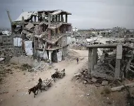
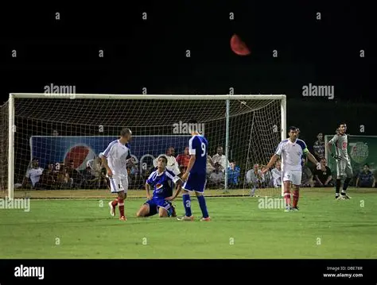

News Categories
Browse articles by category. Each section contains related stories from the website.
Politics News

Gaza Faces Severe Famine Amid Blockade
Millions of people in Gaza are facing serious food shortages as the humanitarian situation becomes harder every day.
Read More
Power Outages Hit Gaza Again
Electricity cuts continue to affect hospitals, schools, homes, and small businesses in Gaza.
Read MoreTechnology News

Tech Startups Grow Despite Challenges
Young developers and technology teams in Gaza continue to build digital products despite difficult conditions.
Read More
Students Use Online Learning to Keep Studying
Many university students are trying to continue their education through online resources, recorded lectures, and small study groups.
Read MoreSports News

Youth Football League Resumes in Gaza
Local youth football activities have returned in some areas, giving young players a chance to practice and enjoy sports again.
Read MoreEntertainment News

Young Artists Share Stories Online
A group of young artists in Gaza are using social media to share drawings, short videos, and personal stories.
Read More